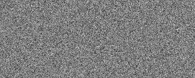

Time Conditioning
Overview
The algorithm used is exactly the same one as before for iterative denoising: except we now determine the alphas and betas ourselves and don't have a trained model to start with. At a high level, we choose a random image from the training set, random, and train the denoiser to predict noise in \( x_t \). This ensures that we are able to train the model on both a diverse dataset of images and timesteps parameter \( t\). We repeat this until the model converges and we are happy.


Training loss curve
Epoch 5 Results

Epoch 20 Results

Bells and Whistles: Sampling Digits GIF for UNet with Time Conditioning

epoch=5
epoch=20Class Conditioning
Training loss curve
Epoch 5 Results
Epoch 20 Results
Bells and Whistles: Sampling Digits GIF for UNet with Class Conditioning
